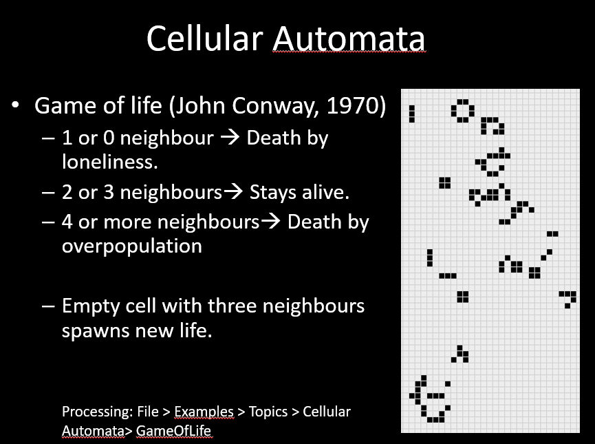
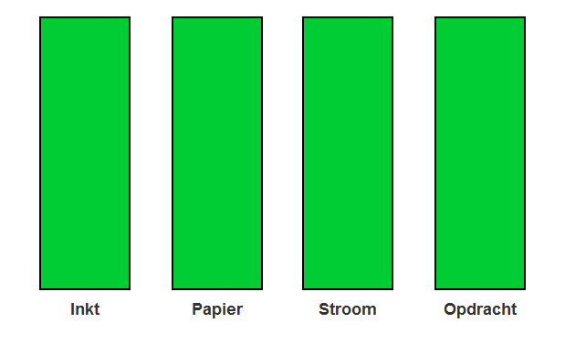
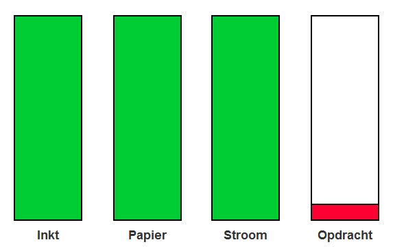
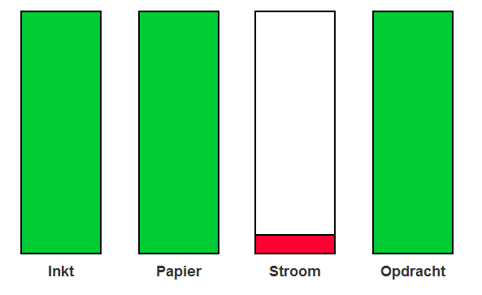
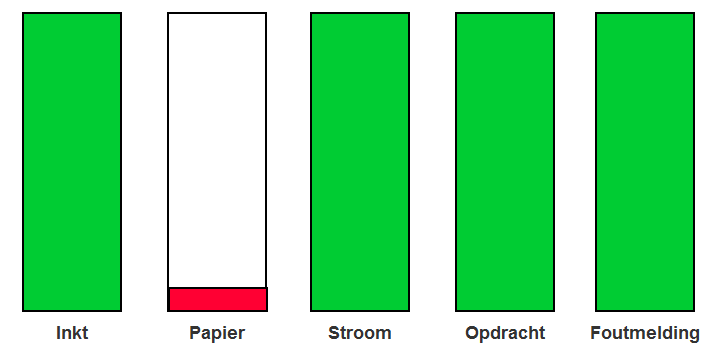

Artificial creatures
Technologie kan soms zo ver gaan dat we kunnen spreken van kunstmatige schepsels. Denk bijvoorbeeld aan robots en andere implementaties van kunstmatige intelligentie.
Een bekend voorbeeld van robots zijn die van Boston Dynamics:
https://www.youtube.com/watch?v=gstcLQ_LC1g
Op hun youtube kanaal plaatsen ze om de zoveel tijd een nieuwe video. Door de video’s op chronologische volgorde te kijken zie je dat er ontzettend veel vooruitgang plaatsvindt.
De meeste mensen hebben op de een of andere manier wel eens gehoord over robots. Tijdens de lectures ging het echter nog een aantal stappen verder.
Zo leerden we gelijk na de robots van Boston Dynamics over allerlei implementaties van kunstmatige intelligentie die voor de meesten van ons nog onbekend waren.
Een van de eerste implementaties van kunstmatige intelligentie is de zogeheten “Conway’s game of life”.
Conway’s game of life is een simulatie van Cellular Automata. John Conway kwam in 1970 al met dit concept.
Het idee achter de game is als volgt:

Witte blokjes zijn leeg, zwarte blokjes willen langzaam maar zeker zoveel mogelijk ruimte innemen.
Ze zitten echter vast aan een aantal regels. Als je als blokje twee of drie buren naast je hebt dan is alles goed.
Al het andere is niet mogelijk. Zie onderstaande video voor verdere uitleg en een demonstratie:
Nadat ik deze voorbeelden had gezien dacht ik: Robots en simulaties..
Technologisch zal het allemaal wel erg indrukwekkend zijn maar het ziet er allemaal nog erg theoretisch uit.
De meeste mensen hebben hier toch geen profijt van in het dagelijks leven.
Gelukkig waren er ook praktische voorbeelden. Zo worden robots al op verschillende manieren gebruikt.
Neem bijvoorbeeld robotstofzuigers. Misschien beter bekend onder de populaire merknaam: “Roomba”. Zie onderstaande video voor een voorbeeld:
Mijn persoonlijke favoriete implementatie van kunstmatige intelligentie ging echter over vergrijzing.
Vergrijzing is in veel ontwikkelde landen momenteel al een enorm probleem. In de toekomst gaat het nog veel erger worden.
Het is dan ook fijn als je technologie kunt inzetten om allerlei problemen die de vergrijzing met zich meebrengt kunt verzachten.
Praktische taken in de zorg automatiseren door robots in te zetten is handig, maar een van de gevolgen is dat patiënten dan waarschijnlijk nog minder contact hebben met zorgverleners.
Uiteindelijk blijven we allemaal mensen, en hebben we behoefte aan sociaal contact.
Een van de voorbeelden die we te zien kregen was dan ook een idee om ervoor te zorgen dat ouderen in verzorgingstehuizen zich minder eenzaam hoefden te voelen:
Ik denk niet dat we een perfect product zien in de bovenstaande video.
Het is relatief simpel, moet af en toe worden opgeladen en het is lastig om als “echt” te beschouwen.
Toch was dit mijn favoriet, omdat technologie vaak de menselijke kant vergeet.
Assignment
De assignment die bij Artificial creatures hoort gaat over het homeostasis model.
Tijdens het hoorcollege leerden we hierover. Het homeostasis model is een model wat gaat over benodigdheden.
Neem bijvoorbeeld de benodigdheden van een printer.
Een printer heeft papier, inkt/toner, stroom en een opdracht nodig.
Als er aan al deze benodigdheden wordt voldaan dan springt de printer als het ware tot leven en begint hij te werken. Om dit lastige concept wat makkelijker uit te leggen heb ik deze
behulpzame afbeeldingen gemaakt die hopelijk meer inzicht geven aan de lezer. In de afbeelding hieronder zien we een printer die klaar is om te werken:

Door deze simpele visualisaties te maken leer je al gauw hoe bepaalde apparaten in elkaar zitten en hoe ze willen werken.
Op de volgende afbeelding zien we de visualisatie van een printer zonder opdracht:

Omdat de printer geen opdracht heeft ontvangen hoeft hij niet te werken, maar de printer zou dat in dit geval wel kunnen. Op de onderstaande afbeelding: De printer heeft
geen stroom en staat dus uit.

Omdat veel mensen niet weten wat een apparaat precies wil wordt er gebruik gemaakt
van een zogenaamde User Interface. Door op deze interface (bijvoorbeeld op de computer of op het scherm van de printer zelf) een foutmelding te geven leren gebruikers al snel wat er moet gebeuren:

Bij de andere gevallen zou een foutmelding echter niet logisch zijn. Als er geen stroom is op de printer kun je op de printer ook geen foutmelding weergeven. En als er geen opdracht is
doorgegeven aan de printer dan is er ook nog geen fout opgetreden. Het homeostasis model levert je dus inzicht op. Niet alleen over hoe apparaten werken maar ook
hoe mensen om moeten gaan met de benodigdheden van deze apparaten.
Research
Tijdens mijn onderzoek vond ik deze website. Het is een artikel over software ontwikkelaar Keiwan Donyagard die een interactieve kunstmatige intelligentie heeft gemaakt en die heeft gepubliceerd op zijn website. Het is een simulatie waarin je een soort schepsel of wezen maakt dat bestaat uit botten, spieren en gewrichten. Vervolgens laat je je wezen los en gaat het vanzelf lopen. Het heeft verder geen doel, maar toch is het leuk om je wezens te zien evolueren. In de bovenstaande link kun je het zelf spelen. In de onderstaande video zie je een demonstratie van het 'spel'.
Reflect
Dit is met afstand mijn favoriete onderwerp van de vier die we hebben behandeld. Ik wist dat ik tijdens de labweeks twee weken lang zou gaan werken aan een van de besproken onderwerpen.
Voor het hoorcollege over Artificial Creatures wist ik echter nog niet voor welke ik zou kiezen. Tijdens het hoorcollege kwam de video van PARO voorbij. Ik werd niet alleen even stil, maar zelfs emotioneel
toen ik zag hoe positief mensen op die gekke baby zeehond. Aangezien ik tijdens de overige hoorcollege's verder helemaal geen sterke emotionele reactie kreeg wist ik het: Dit moet hem worden.
Wat ik dus vooral bijzonder vond was het feit dat mensen nu al enorme positieve reacties tonen op dingen die nog niet eens heel 'echt' zijn. In de toekomst wordt de technologie nog beter.
De grens tussen 'echt' en 'nep' wordt steeds kleiner. Ik hoop dat we mensen minder eenzaam kunnen laten voelen door artificial creatures in te zetten.